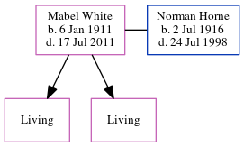

Mabel Horne (née White) 1911 - 2011
[ Home ] | [ Calendar ] | [ Surnames Index ] | [ Errors ] | [ Family History ]Mabel White, the wife of Norman George Horne (the first cousin twice-removed on the father's side of Nigel Horne), was born in Ramsgate, Kent, England on 6 Jan 19111,2,3 and. She married Norman (a painter & decorator with whom she had 2 surviving children Beryl C and Margaret J) at Salem Baptist Church, St Peters, Thanet, Kent, England on 5 Aug 19374. On 29 Sept 1939, she was living at 8 Upton Road, Broadstairs, Kent1.
She died on 17 Jul 2011 in Margate, Kent, England.
Citations
- 1939 Register - Findmypast (was recorded at this address)
- England & Wales births 1837-2006 - Findmypast
- England & Wales, FreeBMD Birth Index, 1837-1915 Online publication - Provo, UT, USA: The Generations Network, Inc., 2006.Original data - General Register Office. England and Wales Civil Registration Indexes. London, England: General Register Office. © Crown copyright. Published by permission of the Cont
- England & Wales Marriages 1837-2005 - Findmypast
Media
Thanet Advertiser - 10 August 1937

1939 Register Transcription - TNA-R39-1685-1685K-027-34
1939 Register Transcription - TNA-R39-1685-1685K-027-33
England & Wales marriages 1837-2005 - BMD/M/1937/3/AZ/001830/059
England & Wales births 1837-2006 - BMD/B/1911/1/AZ/001479/113
Family Tree
Map
Generated by ged2site. Last updated on Jul 3, 2024
Known Issues
Death date (17 Jul 2011) has no citations
No records of living with anyone